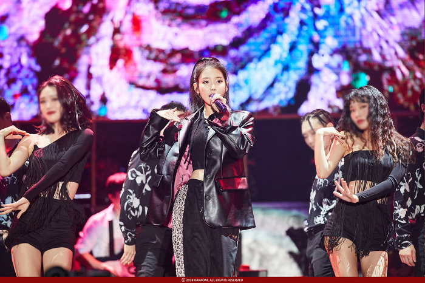

적재는 배우 박보검이 리메이크해 화제가 된 자신의 곡 '별 보러 가자'에 대해 "제 곡 중 유일하게 30분 만에 써낸 곡"이라며 "발매 당시에는 큰 인기를 못 얻었지만 나중에 박보검님이 불러주셔서 많이 유명해졌다. 제게 고마운 곡"이라고 설명했다. 또한 가장 기억에 남는 아티스트를 묻는 MC 김희철의 질문에 "아이유"라며 "아이유씨는 고맙게도 항상 제 곡을 먼저 홍보해줘서 도움을 많이 받았다"고 답했다. 이어 "고마운 만큼 (아이유의) 공연 때 제가 잘할 수 있는 부분을 찾아서 연주하려고 했다"고 특별한 우정을 고백해 이목을 끌었다.
적재는 '별 보러 가자'에 이어 1집 수록곡 'The door(더 도어)'까지 달콤한 목소리와 기타 연주로 시청자들의 마음을 녹였다. MC 김이나는 "적재의 목소리는 트렌디한 동시에 포크 음악 같은 정서도 있다"며 "여심을 들었다 놨다 한다"고 감탄했다.
한편 비비는 고등학생 때 장거리 연애했던 경험담을 공개했다. "중국에 사는 친구와 연애하며 화상 통화도 하고 가끔 만났었다"며 "그 관계에서 영감을 얻어 곡 'Fedexx girl(페덱스 걸)'을 작사했다. 배송업체 이름에서 노래 제목을 따왔고, 나를 배달해서 선물로 주겠다는 내용"이라고 밝혔다. 비비는 말할 때의 수줍은 모습과 달리 무대에서는 당당하고 치명적인 퍼포먼스로 반전 매력을 뽐내 강렬한 인상을 남겼다. 뿐만 아니라 평소 애창곡으로 황치훈 '추억 속의 그대', 강산에 '라구요', 높은음자리 '바다에 누워' 등 1998년생인 비비가 태어나기도 전에 유행했던 곡들을 꼽아 놀라움을 자아냈다. MC 배순탁은 "요즘 친구들은 신곡, 구곡 구별이 없는 것 같다"며 "예전에는 계보를 보며 음악을 들었는데, 요새는 계보가 무력화된 시대라 처음 듣는 노래가 신곡이나 마찬가지"라고 덧붙였다.| 아이유 | 48.3 |
| 유인나 | 36.9 |
| 유애나 | 36.2 |